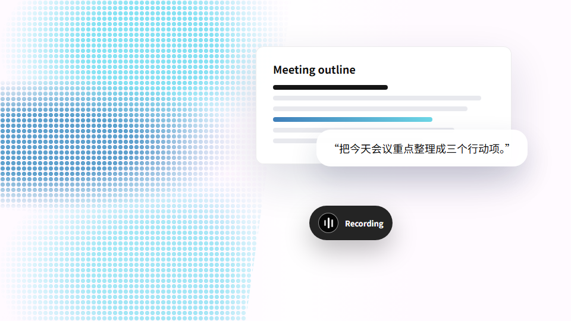
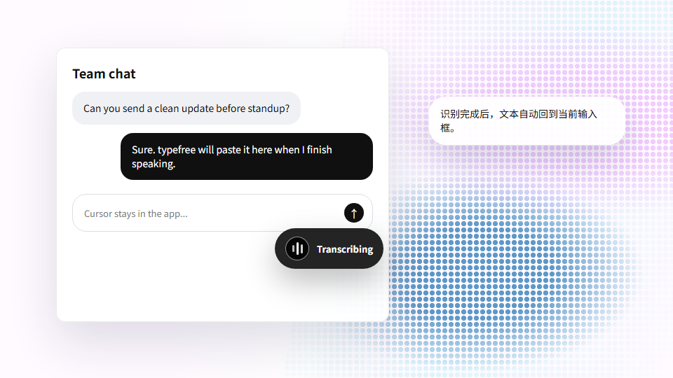
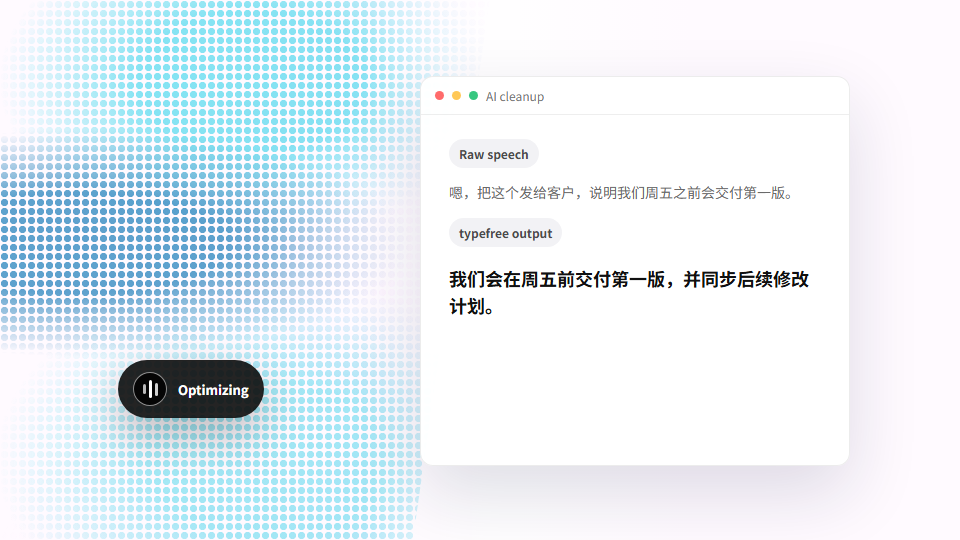
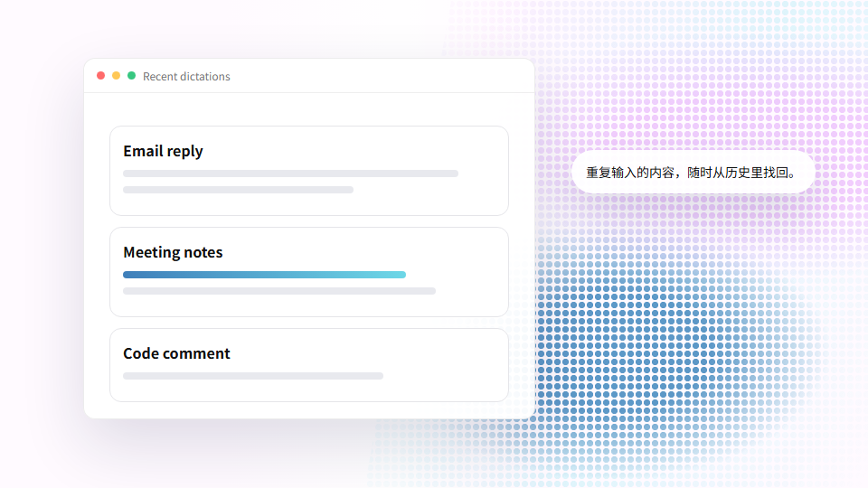
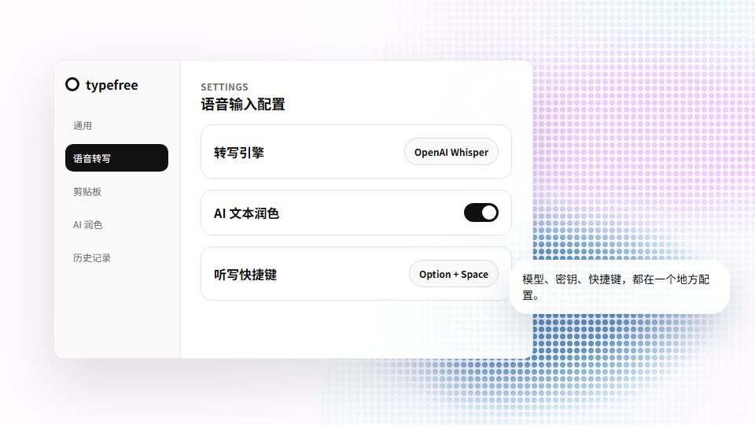

为日常写作打造的 typefree
按下热键，说出想法，文本自动回到当前光标。
了解更多你的 AI 语音输入助手
下载桌面版为每天都要写很多字的人打造
无论光标停在邮件、文档、聊天框还是编辑器里，typefree 都能把语音转成可用文字。


识别完成后直接回到输入位置，少一次复制粘贴，少一次窗口切换。
开启 AI 润色后，零散表达可以整理成更自然、清楚、适合发送的文本。


写邮件、回消息、整理会议记录、做笔记、补充代码注释，都可以少敲很多字。
按语言、速度和成本选择转写服务，也可以把润色模型单独配置。

按下设定热键即可录音，结束后自动把文字送回光标处。
语音识别走云端服务，文本整理可以选择云端或本地模型。
转写文本自动保存，便于找回刚才说过的内容和常用片段。
说出来，不用打字
下载桌面版